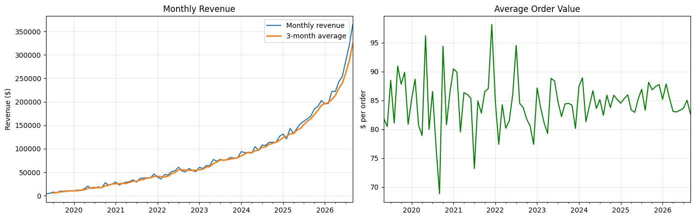
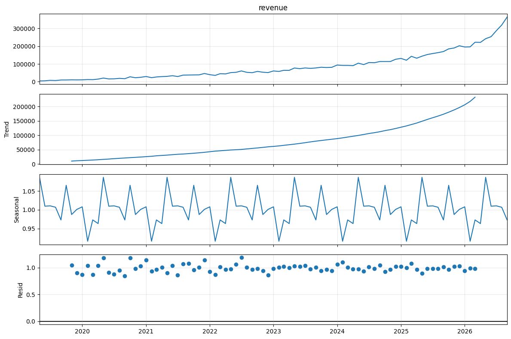
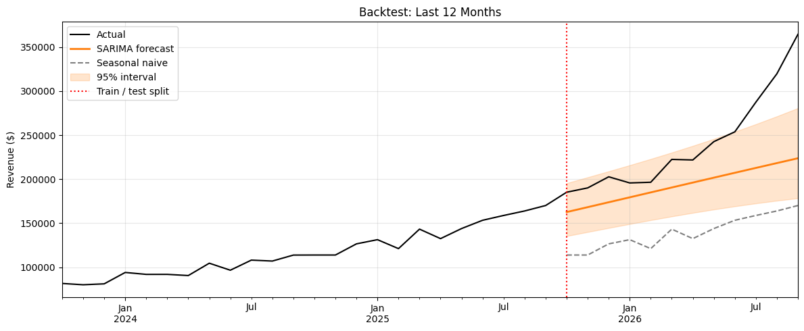
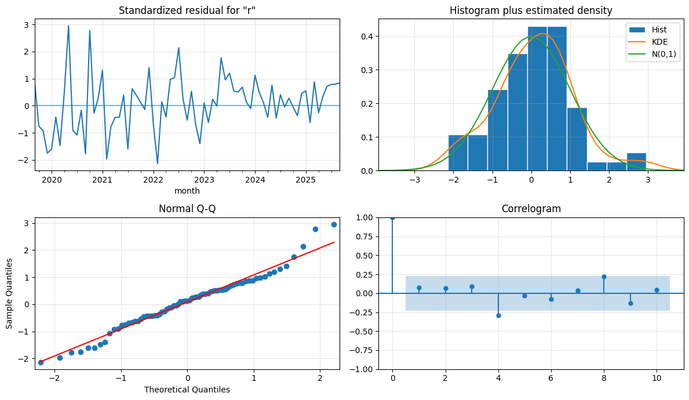
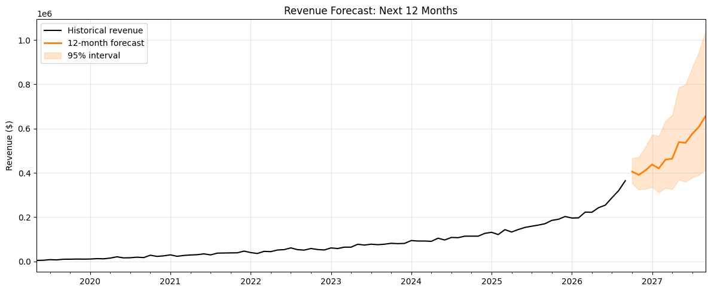
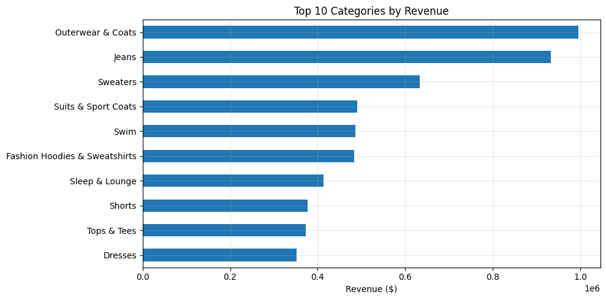

End-to-end revenue forecasting for an e-commerce business: SQL extraction from BigQuery, exploratory analysis, stationarity testing, SARIMA model selection, backtesting against baselines, residual diagnostics, and a 12-month forecast with 95% prediction intervals.
Orders pulled with SQL from the thelook_ecommerce public dataset (cancelled and returned orders excluded). Launch-period months below 5% of median revenue were trimmed, leaving 89 months.

Multiplicative decomposition shows a clear seasonal pattern: May is the strongest month (1.09x typical) and February the weakest (0.92x). That rules out plain ARIMA and motivates SARIMA.

Log-transformed revenue is non-stationary (ADF p = 0.37). One regular difference fixes it (p < 0.001), while seasonal differencing was inconclusive (p = 0.77), so both options were compared on out-of-sample error rather than AIC.
| Series | ADF stat | p-value | Result |
|---|---|---|---|
| log revenue | -1.82 | 0.371 | Non-stationary |
| log revenue, d=1 | -10.50 | < 0.001 | Stationary |
| d=1 + seasonal D=1 | -0.97 | 0.765 | Non-stationary |
A forecast only matters if it beats simple alternatives. The tuned SARIMA cut error by roughly 4x versus the naive baselines.
| Model | MAE | RMSE | MAPE % |
|---|---|---|---|
| SARIMA (tuned) | 18,039 | 32,156 | 6.01 |
| SARIMA (D=1 check) | 31,655 | 43,765 | 11.50 |
| Holt-Winters | 43,429 | 57,054 | 16.03 |
| Naive | 70,114 | 88,811 | 25.99 |
| ARIMA(1,1,1) | 71,505 | 89,896 | 26.60 |
| Seasonal naive | 100,827 | 107,702 | 40.86 |
Three candidate specifications were tested across five 6-month forecast windows. SARIMA(2,1,2)(0,1,1,12) had the lowest average error and was selected as the final model.
| Model | Mar 24 | Sep 24 | Mar 25 | Sep 25 | Mar 26 | Avg |
|---|---|---|---|---|---|---|
| SARIMA (2,1,2)(0,1,1,12) | 8.8 | 3.3 | 11.6 | 2.2 | 9.2 | 7.0 |
| SARIMA (1,1,2)(1,1,1,12) | 8.0 | 4.4 | 3.8 | 7.0 | 12.8 | 7.2 |
| ARIMA (1,1,2) | 9.2 | 4.5 | 6.2 | 11.1 | 11.3 | 8.5 |
MAPE % by forecast origin.
Actual revenue versus the model forecast and a seasonal-naive baseline, with a 95% prediction interval.

Ljung-Box test at lag 12 returned p = 0.137, so no significant autocorrelation remains in the residuals.

Model refit on all available data. Projected revenue is about $5.9M over the next 12 months if recent growth persists, and the interval widens substantially by month 12, so near-term months are the most reliable.

Revenue is concentrated: Outerwear & Coats and Jeans together make up about a quarter of total revenue, and the top 10 categories account for roughly 73%.

Outerwear wins on price, Jeans on volume. Several categories sell 8,000–9,000 units but earn under $60 each, so they bring volume rather than revenue.
| Category | Revenue | Units | Avg price | Share |
|---|---|---|---|---|
| Outerwear & Coats | $996,036 | 6,858 | $145.24 | 13.1% |
| Jeans | $933,049 | 9,450 | $98.74 | 12.3% |
| Sweaters | $633,475 | 8,438 | $75.07 | 8.3% |
| Suits & Sport Coats | $489,947 | 3,905 | $125.47 | 6.4% |
| Swim | $485,846 | 8,582 | $56.61 | 6.4% |
| Fashion Hoodies & Sweatshirts | $483,097 | 8,967 | $53.87 | 6.4% |
| Sleep & Lounge | $413,626 | 8,434 | $49.04 | 5.4% |
| Shorts | $376,700 | 8,244 | $45.69 | 5.0% |
| Tops & Tees | $372,361 | 8,984 | $41.45 | 4.9% |
| Dresses | $352,148 | 4,186 | $84.13 | 4.6% |
Tools & techniques: Python, SQL (BigQuery), pandas, statsmodels, scikit-learn, SARIMA, Holt-Winters, rolling-origin backtesting, MAPE/RMSE evaluation, matplotlib.